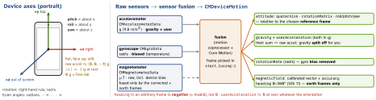

ios-platform · folio
In one line: Core Motion turns the accelerometer (g, gravity included), gyroscope
(rad/s, biased) and magnetometer (μT, uncalibrated) into device motion by
sensor fusion: attitude, gravity split from user acceleration, bias-free rotation, calibrated
field. One CMMotionManager per app; the motion coprocessor also logs steps and activity
while your app is not running (7 days).
Download PDF Print view LaTeX source


CMMotionManager
- One instance per app (Apple: several “can affect the rate at which the system receives data”). Keep a strong reference — a deallocated manager delivers nothing.
- Four services, each with
is…Available/is…Active, an…UpdateIntervalin seconds (1.0/60), andstart/stop: accelerometer, gyro, magnetometer, deviceMotion. Max rate is hardware-dependent, “usually at least 100 Hz”; asking for more silently gives the max. - Push =
start…(to: queue) { }: every sample to anOperationQueue. Pull =start…()with no handler, then readmm.deviceMotiononce per frame (CADisplayLink) — Apple’s pick for games. - Battery: sensors + fusion run only while started — lowest rate that works,
stopoff screen. Updates stop when the app is suspended (no “motion” background mode). - Prefer deviceMotion over raw (see picture);
magneticField.accuracy.uncalibrated….high;showsDeviceMovementDisplaylets iOS ask the user to move the device to calibrate.attitude.multiply(byInverseOf: ref)= rotation since a reference pose (“recentre”).
Example — fused motion, push, one manager
final class Motion { // ONE per app, kept alive
let mm = CMMotionManager()
private let queue = OperationQueue() // not .main at 100 Hz
func start(_ onTilt: @escaping (CMAcceleration) -> Void) {
guard mm.isDeviceMotionAvailable else { return } // Simulator: false
mm.deviceMotionUpdateInterval = 1.0 / 50 // SECONDS
let f: CMAttitudeReferenceFrame = .xMagneticNorthZVertical
guard CMMotionManager.availableAttitudeReferenceFrames()
.contains(f) else { return }
mm.startDeviceMotionUpdates(using: f, to: queue) { m, error in
guard let m else { return }
onTilt(m.gravity) // (0,0,-1) when flat
let jolt = m.userAcceleration // gravity already removed
let q = m.attitude.quaternion // x, y, z, w
let deg = m.heading // valid in north frames
}
}
func stop() { mm.stopDeviceMotionUpdates() }
}Authorization
NSMotionUsageDescription is required by CMPedometer, CMMotionActivityManager, CMSensorRecorder, CMHeadphoneMotionManager — missing → crash, not a silent denial. CMAuthorizationStatus (iOS 11): .notDetermined .restricted .denied .authorized. Raw CMMotionManager: no status API until authorizationStatus() appeared in the iOS 27.2 beta docs (no discussion yet).
Attitude reference frames — Z is always vertical
| frame | X axis points to |
|---|---|
xArbitraryZVertical | arbitrary — the default |
xArbitraryCorrectedZVertical | arbitrary; magnetometer fixes long-term yaw, more CPU |
xMagneticNorthZVertical | magnetic north — compass |
xTrueNorthZVertical | geographic north — needs location |
Higher-level managers — use these before raw data
CMPedometer | iOS 8. Steps, distance (m), floors up/down, currentPace (s/m),
currentCadence (steps/s). queryPedometerData(from:to:) = 7 days of history;
startUpdates(from:) live; is…Available per metric. |
CMMotionActivityManager | iOS 7. stationary walking running automotive
cycling unknown + confidence low/medium/high; live or queryActivityStarting (7 days). |
CMAltimeter | iOS 8. Barometer: relativeAltitude (m since first event), pressure
(kPa). iOS 15: absolute altitude above sea level + accuracy. |
CMHeadphoneMotionManager | iOS 14. Head tracking from spatial-audio AirPods (attitude, rotation, user accel); connect/disconnect delegate. |
CMBatchedSensorManager | watchOS 10, Series 8 / Ultra, in a HealthKit workout: accel 800 Hz, device motion 200 Hz, one batch per second — golf swings. |
CMFallDetectionManager | watchOS 7.2, Series 4+: fall events, app woken in background; Apple-granted entitlement. |
SensorKit (iOS 14): research studies only — an entitlement + an approved study; never a product feature.
Traps
- “Subtract 1 g from z” works only lying flat — use
userAcceleration(fused with the gyro). - Interval is seconds, not Hz:
= 60is one sample a minute. - Handler on
.mainat 100 Hz floods the UI thread — background queue, hop to main. - Euler: gimbal lock at pitch ±90° — use the quaternion.
- Steps while the app was closed: no background mode — query
CMPedometerhistory. - Activity flags are not exclusive: car at a red light =
automotive+stationary; results lag “up to several minutes”. - Shake-to-undo needs no Core Motion:
UIResponder.motionEnded(.motionShake, with:). Simulator has no motion hardware.